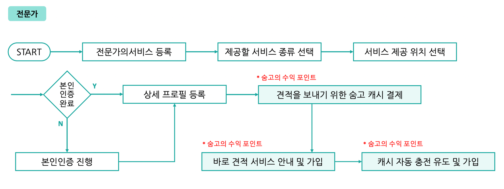

숨고
자동 견적은 어떻게 발송되고, 캐시는 언제 차감·보상되는가?
생활·전문 서비스가 필요한 고객과 전문가를 연결하는 중개 플랫폼.
학습 목적바로 견적의 요청 조건·지역·예산 설정과 자동 발송 흐름을 분석했습니다. 견적 미열람 보상, 충전·보너스 캐시의 사용·환불 정책을 구분하고 초기 전문가 확보와 앱·웹 운영 방식도 살폈습니다.
개인 학습 기록 · 관찰한 경험, 기획 의도에 대한 해석, 개선 제안을 구분해 정리했습니다. 수치·요금·정책은 분석 당시 조사한 자료이며 현재 기준이나 직접 만든 성과가 아닙니다.
01사용자와 해결 방향
누구를 위한 서비스인가전문가를 찾아 비교해야 하는 고객과 요청에 대응하며 영업 비용을 관리해야 하는 전문가.
Why · 사용자가 찾는 이유
고객은 여러 전문가에게 반복 문의하지 않고 조건에 맞는 견적과 프로필을 비교하고 싶다. 전문가는 연락을 기다리거나 매번 요구사항을 확인하는 수고를 줄이고, 작업 중에도 새 고객을 만나고 싶다.
What · 제공 경험과 해결 방식
고객이 필요한 서비스와 조건을 요청서로 등록하면 전문가의 견적·프로필을 받아 비교하고 상담할 수 있게 한다. 전문가는 조건을 미리 설정해 맞는 요청에 자동으로 견적을 보내고 영업 기회를 얻는다.
02핵심 기능과 벤치마킹
- 요청서
- 필요한 서비스와 조건을 미리 수집.
- 바로 견적
- 지역·요청 조건·예산·문구·금액을 설정해 대응 자동화.
- 캐시·발송 내역
- 견적 발송 비용과 열람·보상 상태를 관리.
비교해서 살펴본 지점
- 크몽
- 고객이 전문가를 직접 검색·비교하는 방식과 요청서 기반 견적 방식을 비교.
크몽과 다른 전문가 탐색 방식
| 비교 축 | 숨고 | 크몽 |
|---|---|---|
| 연결 방식 | 고객 요청 조건에 맞춘 견적 전달 | 고객이 카테고리·프로필을 검색하고 비교 후 결제 |
| 중심 가치 | 다양한 생활·전문 서비스의 빠른 매칭 | 현업에 필요한 전문 인력·자원의 비교 |
| 플랫폼 | 앱·웹 | 앱·웹 |
바로 견적의 설정 단위
서비스별 1개 견적을 설정하고 요청 조건·지역·일일 최대 예산·문구·금액으로 자동 발송 범위를 제한하는 구조를 조사했다. 여러 서비스를 제공하면 각각 설정하고, 프로필에서 지정한 요청은 1시간 동안 해당 전문가에게 먼저 전달하는 당시 기준도 살폈다.
03사용자 흐름과 기획 의도
관찰한 경험
- 조건·지역·예산·문구를 설정한 뒤 요청에 맞춰 자동 견적을 보내는 흐름을 분석했습니다.
- 견적 발송에 쓰이는 캐시, 미열람 보상, 충전·보너스 캐시와 환불 경로를 나눠 정리했습니다.

크게 보기 ↗왜 이렇게 설계했을까 · 나의 해석
- 자동화는 응답 속도를 높이지만, 거래가 성사되지 않아도 전문가에게 비용이 생길 수 있다는 점을 함께 봤습니다.
- 매칭 서비스에서는 고객 전환뿐 아니라 공급자가 비용을 이해하고 통제할 수 있는 기준이 필요하다고 정리했습니다.
04문제와 개선 제안
Pain Point · 걸리는 지점
- 거래가 성사되지 않아도 견적 발송에 비용이 들어 전문가의 부담이 남는다.
- 충전·보너스 캐시의 사용과 보상 기준을 구분해서 이해해야 한다.
기획에 가져갈 기준
- 비용 발생 시점과 보상 조건을 견적 설정·발송·내역 화면에 연결해 설명하는 기준 검토.
- 충전·보상 재화의 사용 순서, 유효기간, 환불 가능 여부를 별도 정책으로 구분.
05장점과 아쉬운 지점
좋았던 점
- 고객의 반복 문의와 전문가의 반복 대응 시간을 줄인다.
- 조건과 일일 예산으로 자동화 범위를 설정할 수 있다.
아쉬운 점 · 더 살필 점
- 응답 속도의 이점과 공급자가 부담하는 비용·경쟁을 함께 고려해야 한다.
빠른 응답이 거래 성사까지 보장하지는 않음
- 편의·비용
- 즉시 견적, 지역·서비스별 설정, 일일 예산 통제를 강점으로 기록. 원문은 수동 견적의 두 차례 과금과 달리 바로 견적은 첫 단계에만 비용이 든다고 비교.
- 부담
- 열람 후 다른 전문가를 선택하면 비용을 돌려받지 못하고, 가격 경쟁과 발송 수수료 부담이 남음. 당시 메모에는 견적 1건 약 1,000원 사례가 있으나 현재 공통 요금으로 제시하지 않음.
- 이용자 반응
- 비용과 전문가 탐색 시간을 줄인다는 평가, 전문가가 개별 영업을 반복하지 않아도 된다는 반응을 정리.
06내가 주목한 점
초기 공급자 확보와 시장 배경
복수 직업·긱 이코노미 확대를 배경으로, 시장이 크고 디지털 이용에 익숙한 레슨 분야부터 시작한 전략을 조사했다. 지역 전문가를 비교할 무료 채널과 비인기 분야 전문가의 노출 수요가 맞물렸다고 해석했다. 원문은 출시 첫날 매출, 2015년 10월 출시 후 3개월간 전문가 약 3천 명·이용자 약 8,700명 사례를 참고했다.
미열람 보상과 사용 순서 · 당시 기록
| 항목 | 정리한 기준 |
|---|---|
| 보상 조건 | 발송 후 48시간 동안 채팅방 미진입·전문가 프로필 미열람인 견적에 보너스캐시 자동 지급 |
| 상태 안내 | 안읽음 / 견적 조회 알림, 마이페이지 충전·사용 내역에서 보상 확인 |
| 충전캐시 | 유상 구매. 마지막 견적 발송일 기준 5년 유효 |
| 보너스캐시 | 충전 보너스·미열람 보상. 마지막 발송일 기준 60일 유효 |
| 차감 순서 | 충전캐시를 먼저 쓰고 소진 후 보너스캐시 사용 |
| 충전 방식 | 필요할 때 충전하거나 자동충전 설정 |
환불 경로와 예외 · 당시 기록
- 웹
- 프로필 → 마이페이지 충전·사용 내역 → 휴대폰·카드 결제 건 → 환불 가능 금액 → 환불 신청. 웹 구매 충전캐시는 구매 후 5년 이내 신청으로 정리.
- 앱
- 마이페이지 내역에서 충전·환불 필터를 선택한 뒤 결제 건과 환불 금액 확인. Google Play는 구글 정책, iOS는 Apple 고객센터·앱스토어 경로로 구분.
- 환불 제외
- 잔액 1,000캐시 미만, 5년 이상 미사용으로 소멸, 구매 보너스·미열람 보상캐시를 제외 사유로 기록. 실제 이용 시 현재 정책 확인 필요.
추가 학습 · 앱과 웹의 변경·운영 차이
| 검토 축 | 앱 | 웹 |
|---|---|---|
| 변경 배포 | 스토어 심사·사용자 업데이트 필요 | 배포 후 새로고침으로 반영 |
| 구현·접근 | 알림·기기 기능과 네이티브 경험 활용 | HTML·CSS·JS로 인터랙션 구현, 브라우저로 OS 의존성 완화 |
| 통신·경험 | 일부 자원을 기기에 두어 통신을 줄일 여지 | 브라우저 실행·접속 환경에 따라 동작 |
웹뷰 대신 별도 네이티브 앱을 운영하는 이유를 백엔드 알림 연계와 익숙한 UI로 추론했다. 네트워크 사용·기능 지원은 구현에 따라 달라지는 비교이지 절대적인 우열은 아니다.
기획에 가져갈 기준
- 양면 시장의 편의가 한쪽의 비용 부담으로 이동하지 않는지 볼 것.
- 차감·열람·보상·환불을 상태별로 나누고 관리자와 사용자에게 같은 기준을 제공할 것.